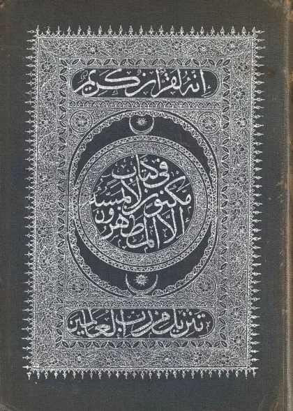

القرآن الكريم
Al-Qur'an al-Karim
Baca Al-Qur'an al-Karim (القرآن الكريم) karya Revelation from Allah secara gratis di Maktabah Ilmu: teks Arab, Indonesia, Inggris, Jepang. Tanpa daftar, tanpa iklan.
Buka kitab iniLihat lemari ilmuDaftar isi
- Al-Faatiha · The Opening
- Al-Baqara · The Cow
- Aal-i-Imraan · The Family of Imraan
- An-Nisaa · The Women
- Al-Maaida · The Table
- Al-An'aam · The Cattle
- Al-A'raaf · The Heights
- Al-Anfaal · The Spoils of War
- At-Tawba · The Repentance
- Yunus · Jonas
- Hud · Hud
- Yusuf · Joseph
- Ar-Ra'd · The Thunder
- Ibrahim · Abraham
- Al-Hijr · The Rock
- An-Nahl · The Bee
- Al-Israa · The Night Journey
- Al-Kahf · The Cave
- Maryam · Mary
- Taa-Haa · Taa-Haa
- Al-Anbiyaa · The Prophets
- Al-Hajj · The Pilgrimage
- Al-Muminoon · The Believers
- An-Noor · The Light
- Al-Furqaan · The Criterion
- Ash-Shu'araa · The Poets
- An-Naml · The Ant
- Al-Qasas · The Stories
- Al-Ankaboot · The Spider
- Ar-Room · The Romans
- Luqman · Luqman
- As-Sajda · The Prostration
- Al-Ahzaab · The Clans
- Saba · Sheba
- Faatir · The Originator
- Yaseen · Yaseen
- As-Saaffaat · Those drawn up in Ranks
- Saad · The letter Saad
- Az-Zumar · The Groups
- Ghafir · The Forgiver
- Fussilat · Explained in detail
- Ash-Shura · Consultation
- Az-Zukhruf · Ornaments of gold
- Ad-Dukhaan · The Smoke
- Al-Jaathiya · Crouching
- Al-Ahqaf · The Dunes
- Muhammad · Muhammad
- Al-Fath · The Victory
- Al-Hujuraat · The Inner Apartments
- Qaaf · The letter Qaaf
- Adh-Dhaariyat · The Winnowing Winds
- At-Tur · The Mount
- An-Najm · The Star
- Al-Qamar · The Moon
- Ar-Rahmaan · The Beneficent
- Al-Waaqia · The Inevitable
- Al-Hadid · The Iron
- Al-Mujaadila · The Pleading Woman
- Al-Hashr · The Exile
- Al-Mumtahana · She that is to be examined
… dan 54 bab lainnya.